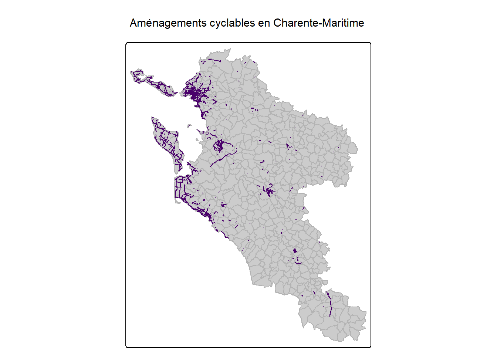
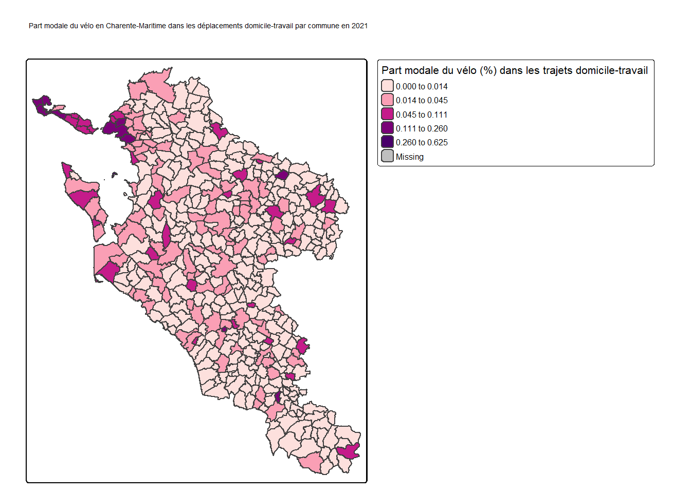
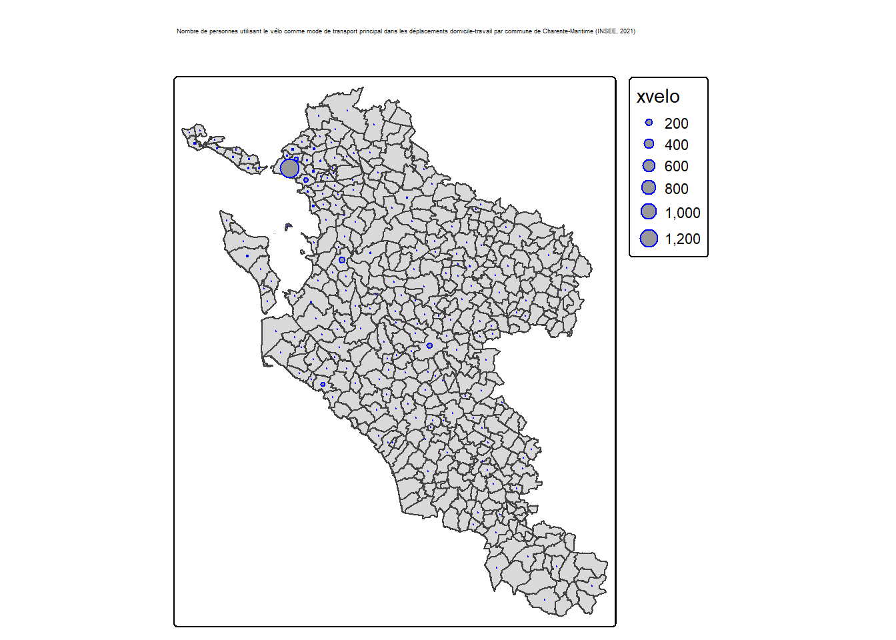

## Reading layer `communes' from data source
## `C:\Users\victo\OneDrive\Documents\.fac\Géographie\L3S6\SIG\Rfinal\RveloETbobo\site\Quoifleur.github.io\data\chm\communes.geojson'
## using driver `GeoJSON'
## Simple feature collection with 463 features and 20 fields
## Geometry type: MULTIPOLYGON
## Dimension: XY
## Bounding box: xmin: 348643.1 ymin: 6448224 xmax: 465056.6 ymax: 6593241
## Projected CRS: RGF93 v1 / Lambert-93## Reading layer `ame_velo_dept17' from data source
## `C:\Users\victo\OneDrive\Documents\.fac\Géographie\L3S6\SIG\Rfinal\RveloETbobo\site\Quoifleur.github.io\data\chm\ame_velo_dept17.geojson'
## using driver `GeoJSON'
## Simple feature collection with 5260 features and 27 fields
## Geometry type: MULTILINESTRING
## Dimension: XY
## Bounding box: xmin: -1.560701 ymin: 45.1985 xmax: -0.2112626 ymax: 46.32296
## Geodetic CRS: WGS 84## ℹ Using "','" as decimal and "'.'" as grouping mark. Use `read_delim()` for more control.## Rows: 4306 Columns: 16
## ── Column specification ────────────────────────────────────────────────────────
## Delimiter: ";"
## chr (3): libelle, ratiovp, ratiovtc
## dbl (13): reg, dep, epci, code_insee, xvelo, xpied, xcar, xtcommun, pm_velo,...
##
## ℹ Use `spec()` to retrieve the full column specification for this data.
## ℹ Specify the column types or set `show_col_types = FALSE` to quiet this message.## ℹ tmap mode set to "plot".tm_shape(geo) +
tm_polygons(fill.alpha = 0.2, border.col = "grey70", col = "grey80" )+
tm_shape(pistes)+
tm_lines(col = "#49006a")+
tm_layout(main.title = "Aménagements cyclables en Charente-Maritime")##
## ── tmap v3 code detected ───────────────────────────────────────────────────────
## [v3->v4] `tm_polygons()`: use 'fill' for the fill color of polygons/symbols
## (instead of 'col'), and 'col' for the outlines (instead of 'border.col').[tm_polygons()] Argument `fill.alpha` unknown.[v3->v4] `tm_layout()`: use `tm_title()` instead of `tm_layout(main.title = )`[plot mode] fit legend/component: Some legend items or map compoments do not
## fit well, and are therefore rescaled.
## ℹ Set the tmap option `component.autoscale = FALSE` to disable rescaling.
## ℹ tmap mode set to "plot".rose_palette <- c("#fde0dd", "#fa9fb5", "#c51b8a", "#7a0177", "#49006a")
tm_shape(geo_data) +
tm_polygons("pm_velo",
style = "jenks",
n = 5,
palette = rose_palette,
title = "Part modale du vélo (%) dans les trajets domicile-travail") +
tm_layout(main.title = "Part modale du vélo en Charente-Maritime dans les déplacements domicile-travail par commune en 2021")##
## ── tmap v3 code detected ───────────────────────────────────────────────────────
## [v3->v4] `tm_polygons()`: instead of `style = "jenks"`, use fill.scale =
## `tm_scale_intervals()`.
## ℹ Migrate the argument(s) 'style', 'n', 'palette' (rename to 'values') to
## 'tm_scale_intervals(<HERE>)'[v3->v4] `tm_polygons()`: migrate the argument(s) related to the legend of the
## visual variable `fill` namely 'title' to 'fill.legend = tm_legend(<HERE>)'[v3->v4] `tm_layout()`: use `tm_title()` instead of `tm_layout(main.title = )`[plot mode] fit legend/component: Some legend items or map compoments do not
## fit well, and are therefore rescaled.
## ℹ Set the tmap option `component.autoscale = FALSE` to disable rescaling.
#Representer les donnees d'usage dans le département (bis)
library(sf)
nb_velo <- st_centroid(geo_data)
# Vérification : présnece de la variable xvelo
nb_velo$xvelo <- geo_data$xvelo
library(tmap)
tmap_mode("plot")## ℹ tmap mode set to "plot".tm_shape(geo_data) +
tm_polygons() +
tm_shape(nb_velo) +
tm_symbols(size = "xvelo", col = "blue") +
tm_layout(main.title = "Nombre de personnes utilisant le vélo comme mode de transport principal dans les déplacements domicile-travail par commune de Charente-Maritime (INSEE, 2021)")## [v3->v4] `tm_layout()`: use `tm_title()` instead of `tm_layout(main.title = )`
## [plot mode] fit legend/component: Some legend items or map compoments do not
## fit well, and are therefore rescaled.
## ℹ Set the tmap option `component.autoscale = FALSE` to disable rescaling.